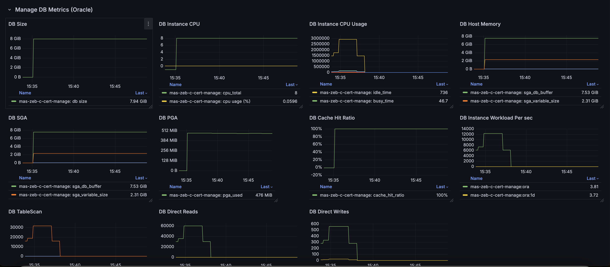

MAS-DB Exporter
Maximo-CPI offers several Prometheus exporters, including the MAS-DB Exporter. This exporter is used to collect DB metrics e.g. cpu, memory, cache hit ratio, direct reads writes. The exporter supports DB2, Oracle and MS SQL Server.
Warning: This exporter leverages logging and custom metric collection features, and is only supported when maximo-cpi is deployed on the OpenShift cluster.
Warning: There is a known bug in the 2.0 and 2.1 releases where the mcpi-dashboard.json file in the Ansible playbook uses an incorrect version. Please apply 2.1.0 hotfix to fix the issue.
Below are the scripts/command to enable and disable the exporter:
mas-manage-db-exporter-enable.sh <manage namespace name> <db type>to enable the exporter. Note: Valid db type values are db2, ora, sqsmas-manage-db-exporter-disable.sh <manage namespace name>to disable the exporter.
Notes:
- The exporter supports multi-instances on the same cluster
-
The enable script:
- create scripts
mas-<instance>-manage-db-exporterunder/opt/app-root/src/server/metricscript - create and apply the podmonitor for
mas-<instance>-manage-db-exporterin the cluster
- create scripts
-
The disable script removes all the above scripts.
Display the metrics
- run
deploy-maximo-cpi-dashboard.shto import the dashboard - Below is the dashboard snapshot sample 